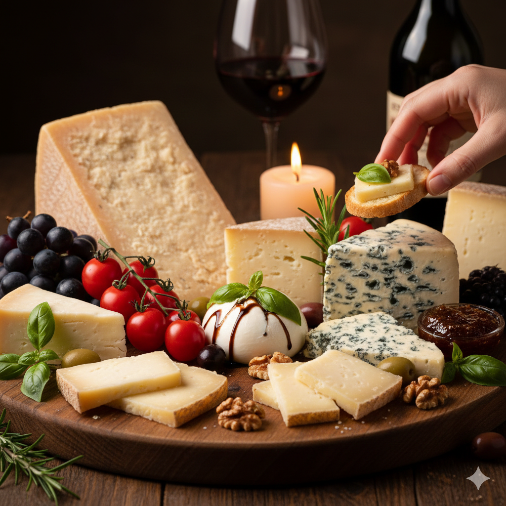

居心地の良い店内

いつも笑顔が溢れる明るい店内です。初めての方もお気軽にお越しください。
『普段使いの気取らない贅沢』をテーマに、お仕事帰りや大切なパートナーと、様々なシーンでご利用いただけます。
CIT 5つのこだわり

こだわり1：日替わりメニュー
豊富な日替わりメニュー！！旬の美味しいお野菜、魚、お肉で美味しい料理を提供しております。毎日変わるおすすめメニューも大人気です。ワインと一緒にお楽しみ下さい。

こだわり2：気軽に立ち寄れる
気軽に立ち寄れるワイン酒場。ワインに合わせたリーズナブルで美味しいアラカルトメニューも豊富です！！オーナーが美味しいと思うワインを取り揃えてます。お気軽にふらっとお立ち寄り下さいね。

こだわり3：パーティーコース
美味しいパーティーコース。お得なコースメニューは2980円から3種類ございます。飲み放題付きコースも人気です。女子会、お仲間とのご宴会におすすめです。

こだわり4：グラスワイン
リーズナブルな日替わりグラスワイン。コスパ最高の美味しいワインを取り揃えております。日替わりグラスワインは580円〜。美味しいワインを気軽にお楽しみください。ボトルワインも各種ご用意しております。

こだわり5：絶品チーズ
ワインとチーズをお楽しみください。オーナーシェフが厳選した絶品チーズを使ったメニューも人気です。